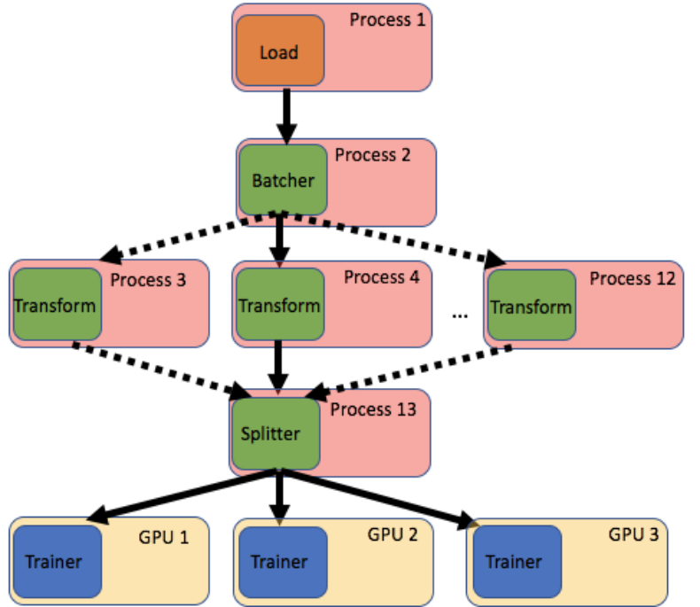

MiniPipe: A mini-batch pipeline¶
MiniPipe is a mini-batch pipeline designed for training machine learning models on out-of-memory datasets in a streaming fashion, written in pure Python. MiniPipe is for situations where the data are too large to fit into memory, or when doing so would discourage experiment iterations due to prohibitively long loading and/or processing times.
Instead of a distributed approach MiniPipe is designed around a streaming paradigm that utilizes pipeline parallelism. In the intended use case data are loaded from a data lake one ‘chunk’ at a time. Such an approach requires a training method that allows for iterative training on small batches of data (mini-batches) such as stochastic gradient decent.
The goal of MiniPipe is to encourage experimentation and prototyping at full scale by making complex training pipelines simple, flexible and fast. The look and feel of the Minipipe API is based on the very successful Keras Model API, which strikes a good balance between simplicity and flexibility.
Pipeline Parallelism¶
A MiniPipe pipeline is build up from pipe segments, which may be connected to form a graph. Pipe segments are connected by queues, for accepting upstream data (inputs) and for passing data downstream (outputs).
Consider this simple example.
import minipipe as mp
# loader, transform and save are user defined python functions/generators
pline = mp.PipeLine()
pline.add(mp.Source(loader))
pline.add(mp.Transform(transform))
pline.add(mp.Sink(save))
# Start pipeline
pline.run()
pline.close()
Where loader, transform and save are all user defined functions. If you’ve used the Keras Sequential API this will look familiar to you. MiniPipe has three basic types of pipe segments: Sources, Transforms and Sinks. Each has one requires an argument called functor. For Sources functors must always be an uninitialized generator, while for Sinks and Transforms functors can be either a function or a class (with a run method).
Sources pass data downstream, Sinks accept data from upstream and Transforms do both. In the PipeLine API pipe segments are connected by adding them to an initialized PipeLine and then calling the PipeLine.build method.
All pipe segments run on their own process which allows for asynchronous pipeline parallelization (see figure below). Such parallelization can dramatically increase the throughput of a pipeline and reduce training/processing times.
{kind=link}
{kind=link}
Horizontal Parallelism¶
Additionally MiniPipe allows for horizontal parallelism, allowing for multiple processes to be assigned to bottlenecks. For example, if in the above example Transform is slower than load and save we can assign multiple processes to with with only one change to our code
pline = mp.PipeLine()
pline.add(mp.Source(loader))
pline.add(mp.Transform(transform), n_processes=2) # ask for 2 processes
pline.add(mp.Sink(save))
# Start pipeline
pline.run()
pline.close()
A process pool is created for transform relieving the bottleneck.
{kind=link}
Machine Learning Pipelines¶
MiniPipe is flexible allowing for generic graph topologies to fit any workflow. In the ML development cycle its often necessary to train multiple models to test out different hyperparameters, feature sets, preprocessing or variations on the model itself.
Consider the scenario of hyperparameter tunning where one would like to test out multiple models that use the same training set and preprocessing. It would be inefficient to have a separate pipeline for each model since you’d need to load and preprocess the same data multiple times. Instead one could use MiniPipe to set up a pipeline that loads and processes the data once, feeding the result to multiple GPUs for training as shown below.
Multi-model Training Pipeline¶
{kind=link}
This is just one example of many possible pipelines that can make your machine learning workflow more efficient.
Installation¶
Installation is super easy with pip:
pip install minipipe